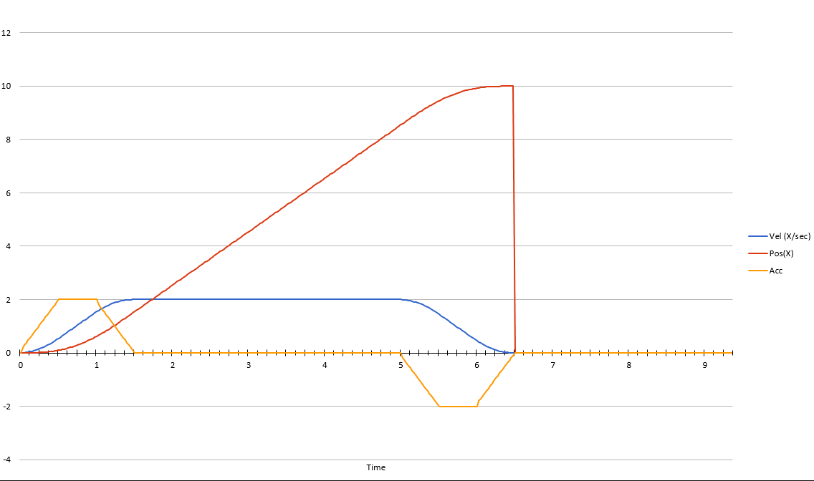

TalonFX Control Modes
Basic position control with kP slams the motor at the target. Two other TalonFX modes are what mechanisms actually use.
- Motion Magic position (
MotionMagicVoltage) drives to a position, but along a trapezoid. You cap the cruise velocity and the acceleration. The TalonFX builds that profile onboard. - Velocity voltage (
VelocityVoltage) holds a speed. Intakes, flywheels, and swerve drive motors use this. There is no end position.
Both are still voltage closed loops. You still apply a TalonFXConfiguration, and you still call setControl every cycle from a run command. The gains mean different things in each mode, so they are tuned in a fixed order.

Log position, velocity, and the target in AdvantageScope before you tune. You cannot see overshoot from the shaft alone.
Motion Magic Position
Add this next to the PositionVoltage command from the basic section. Keep that command. Motion Magic is a different request, not a replacement for understanding kP.
import com.ctre.phoenix6.controls.MotionMagicVoltage;
private final MotionMagicVoltage motionMagicRequest = new MotionMagicVoltage(0);
TalonFXConfiguration config = new TalonFXConfiguration();
config.MotorOutput.NeutralMode = NeutralModeValue.Brake;
config.Slot0.kP = 0.5;
config.MotionMagic.MotionMagicCruiseVelocity = 20; // rotor rotations per second
config.MotionMagic.MotionMagicAcceleration = 40; // rotor rotations per second squared
motor.getConfigurator().apply(config);
public Command motionMagicTo(double rotations) {
return run(() -> motor.setControl(motionMagicRequest.withPosition(rotations)));
}
MotionMagicCruiseVelocity is the top speed of the move, in rotor rotations per second. MotionMagicAcceleration is how fast it is allowed to speed up and slow down. If the target is close, the profile becomes a triangle and never reaches cruise. That is normal.
Jerk is optional. Leave MotionMagicJerk at 0 until the trapezoid already behaves. A nonzero jerk rounds the corners of the velocity graph and makes the move take longer.
Start the profile slow. 20 rotations per second and 40 rotations per second squared are a gentle first move on the unloaded test-board Falcon. A geared mechanism, in mechanism rotations, will want much smaller numbers. Raise them only after the shape on the graph looks right.
Tuning Motion Magic
Zero every gain except the kP you already trust, and set kS, kV, kA, kI, and kD to 0. Then change one number at a time and redeploy.
- kS, static friction. Raise it until the shaft just begins to move, then back off to the largest value that does not move on its own. On voltage control this is volts. A test-board Falcon is often near
0.1to0.25. Skip this if the motor already starts cleanly with kP alone. - kV, cruise. Command a move long enough to reach cruise. kV is volts per rotations-per-second of the profile velocity. Raise it until measured velocity matches the flat top of the profile. If measured cruise is low, kV is low.
- kA, acceleration. Watch the slope at the start of the move. Raise kA until measured velocity rises about as steeply as the profile. Leave it at 0 if the slope already matches.
- kP, position error. This is the same unit as the basic lesson: volts per rotation of position error. Raise it until the shaft reaches the target and holds it. Back off when it oscillates or slams the end of the move.
- kD, velocity error. Add a small kD only if kP overshoots. kD fights a velocity error. Too much kD oscillates. Leave kI at 0.
There is no kG on the test board. kG is the constant voltage that holds an elevator or arm against gravity. Add it only for those mechanisms, before kS.
The sign of kS has to oppose friction. For Motion Magic, set config.Slot0.StaticFeedforwardSign to StaticFeedforwardSignValue.UseClosedLoopSign so the TalonFX picks the sign from the closed loop instead of from a velocity target that is zero at the end of the move.
A tuned Motion Magic graph shows measured velocity following the trapezoid, then measured position settling on the target without ringing.
Velocity Voltage
VelocityVoltage does not go to a position. The target is a speed in rotations per second, and kP is volts per rps of speed error, not volts per rotation. A position kP of 0.5 pasted into a velocity slot is a different controller and will feel wrong.
import com.ctre.phoenix6.controls.VelocityVoltage;
private final VelocityVoltage velocityRequest = new VelocityVoltage(0);
public Command holdVelocity(double rotationsPerSecond) {
return runEnd(
() -> motor.setControl(velocityRequest.withVelocity(rotationsPerSecond)),
() -> motor.setVoltage(0)
);
}
Use a second gain slot if this motor also runs Motion Magic. VelocityVoltage defaults to slot 0, the same slot as Motion Magic. Two jobs with different kP units cannot share a slot. Put velocity gains in slot 1 and select it on the request:
config.Slot1.kS = 0.2;
config.Slot1.kV = 0.12;
config.Slot1.kP = 0.1;
private final VelocityVoltage velocityRequest = new VelocityVoltage(0).withSlot(1);
0.12 volts per rps is only a starting guess for an unloaded Falcon. A geared wheel or intake will be different. Read kV off your graph, do not copy it from another robot.
Tuning Velocity Voltage
Zero slot 1, including kP. Command a steady speed, such as 20 rotations per second, with whileTrue.
- kS. Raise it until the shaft is just about to turn, then back off one step.
- kV. With kP still 0, raise kV until the measured velocity sits on the target during the flat section. kV is doing almost all of the work. If the graph is short of the target by the same amount at every speed, kV is still low.
- kP. Raise it until a speed change settles quickly. Stop when the velocity line oscillates. Velocity kP is usually small, often under
0.5on voltage control. - kD. Leave it at 0 unless the speed oscillates after kP is set. kI stays 0.
Bind it with whileTrue. Releasing the button runs the runEnd cleanup and drops the voltage to 0. A velocity loop left running will keep spinning.
controller.a().whileTrue(motorSubsystem.motionMagicTo(5));
controller.b().whileTrue(motorSubsystem.holdVelocity(20));
Note
Duty cycle and raw setVoltage are still the right tools for a roller that only needs to be on or off. Motion Magic and velocity voltage are for when the mechanism has to arrive at a position on purpose, or hold a speed while the load changes. The full gain list is in the Phoenix 6 TalonFXConfiguration docs, and the control-mode writeup is in the Motion Magic docs.